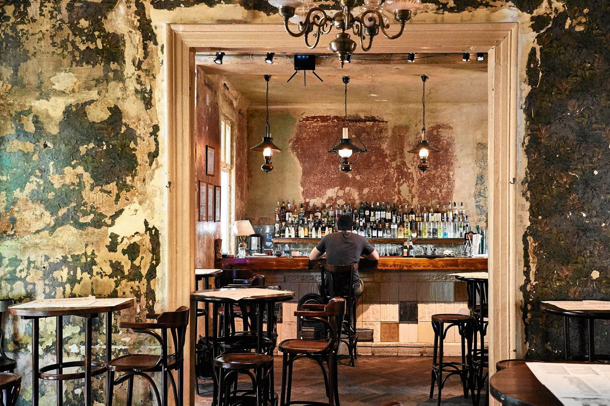
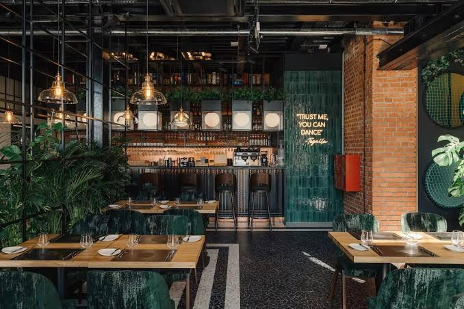
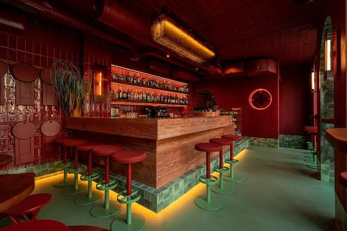
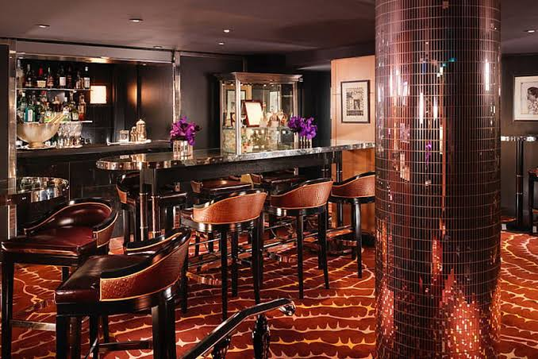

O mnie
Hubert Alksnin (ur. 03 lipca 1999 w Warszawie) - Barman oraz barback w latach 2017 - 2026 pracujący w miejscach takich jak Bejrut\Kraken, Raj w Niebie, Pomost 511, Hygge Warszawa, WYTWÓRANIA BAR, Hard Rock Cafe. Ukończył gimnazjum im. Orła Białego w korszach




Czym się zajmuję teraz
- Uczęszczam do szkoły ogólnokształcącej zaocznie
- Rozwijam swoje umiejętności w zakresie obsługi komputera, programowania, debugowania, oraz pracy z AI
- W przyszłości chciałbym zostać programistą backendowym